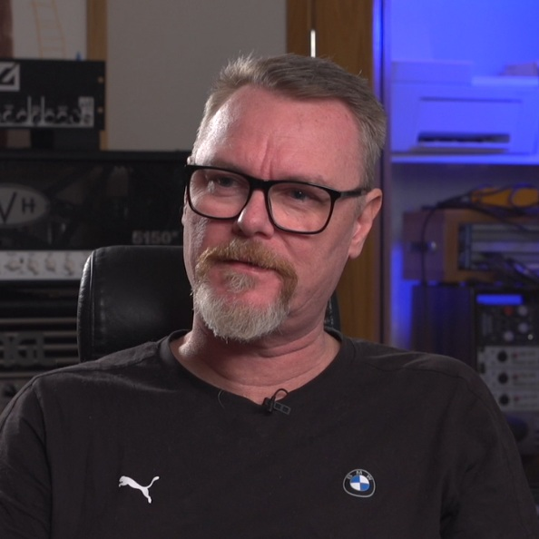

Chapter 1: The Pursuit of Heaviness
How metal’s core aesthetic evolved, and why production philosophies diverge.
Navigate Chapters
Metal music appeared over fifty years ago with one element at its core: heaviness. From the doomy beginnings of Black Sabbath to the technical precision of modern extreme metal, the genre has developed remarkably. But despite metal's diversification into countless subgenres, the pursuit of heaviness has remained a consistent thread throughout its history, linked to advancements in technology and engineering practices.
The research project 'Heaviness in Metal Music Production' (HiMMP) is the first controlled analysis of how leading metal producers conceptualize and create heaviness. By engaging eight world-class producers to mix identical source material, our study isolated the production variables in ways previous research could not. We did not observe a single "correct" approach to heavy production but two philosophical frameworks that represent idealized poles on a continuum, each with its own technical implementation and conceptual foundation. Participating producers occupied various points along this spectrum, with some leaning more toward one philosophical approach while incorporating elements of the other.
From Primitive Beginnings to Hyperreal Production
The contrast between early metal production and contemporary practices is striking. Black Sabbath's self-titled debut album (1970) was recorded in a single day with minimal equipment. The session used only a 4-track tape machine and a basic microphone setup, with virtually no post-processing. Yet this record, with its massive guitar and bass wall of sound, defined the sonic foundation of metal, combining powerful sounds and controlled performances with thick distortion1 that made it sound exceptionally heavy for its time.
Fifty years later, metal production has developed dramatically. Contemporary metal recordings often involve extensive pre-production and separate tracking of instruments. The recording is followed by meticulous editing, sample reinforcement, and sophisticated processing chains. Modern productions regularly exceed 50 to 100 tracks per song, with some productions even using hundreds of layers to create a hyperreal sonic experience that transcends what's physically possible in live performance.
This development reflects metal's unique relationship with technology. As producer Russ Russell notes, 'A lot of metal has been born directly from breakthroughs in technology, and a lot of the technology has been inspired by the developments in heavy metal'.2 Unlike many genres that prioritize capturing natural performances, metal has embraced technological advancement as a means to enhance heaviness: the genre's defining quality.
The Great Debate: Natural vs. Hyperreal
The eight producers featured in this research occupy different positions on a philosophical spectrum (Figure 1.1). At one end stands the "Naturalistic School", championed by veterans like Mike Exeter and Fredrik Nordström, which prioritizes expressive performance capture, dynamic preservation, and organic interaction between musicians. At the opposite end, the "Hyperreal School", exemplified by younger generation producers like Buster Odeholm and Adam "Nolly" Getgood, employs precise editing and phase alignment3, using sophisticated processing to create heaviness that exceeds what performers could physically produce.
This divide is more than just personal preference or technical approach; it reflects fundamentally different conceptions of what creates the most effective heaviness in metal. These philosophies both acknowledge the centrality of heaviness while approaching its realization through contrasting means.
Think of it this way: The naturalistic approach is like filming a documentary that captures real performances with subtle enhancements, while the hyperreal approach is more like creating a CGI film that constructs a perfectly engineered experience that could not exist in the real world.
From Black Sabbath's primitive beginnings to the sophisticated productions of today4, the pursuit of heaviness continues to drive metal's sonic development. This guide examines how today's leading producers manage this fundamental quality that defines the genre and offers ideas for engineers and producers to work on their craft.
'If I had to sum heaviness up – it'd be in the context of music anyway – that thing that washes over you and makes you feel such undeniable weight or dread or sorrow or excitement, or crushing power of something. Crushing power, that's probably the best one of those I just came up with.'
"Slayer's Reign in Blood album doesn't sound very good, but it's very aggressive. Sound-wise, it's not good, and performance-wise, it's not good. But it has a heart in there that brings heaviness."

Endnotes
- A change in audio waveform that produces harmonic or inharmonic components depending on the cause. ↩
- In: Niall Thomas (2015). ‘The Development of Technology and its Influence on Recorded Heavy Metal Music 1969–2015’. PhD thesis, University of Hull, p. 217. ↩
- The precise synchronisation of audio signals to prevent frequency cancellation. ↩
- For more information, see Mark Mynett’s series ‘Session Notes’ in Sound on Sound magazine, which includes a walkthrough of the pre‑production, recording, mixing, and mastering processes in metal: Pt 1: soundonsound.com/techniques/making-modern-metal-part-1; Pt 2: soundonsound.com/techniques/making-modern-metal-part-2; Pt 3: soundonsound.com/techniques/making-modern-metal-part-3. ↩
- Ian Christe (2003). Sound of the Beast: The Complete Headbanging History of Heavy Metal. New York, NY: Harper Entertainment, p. 10. ↩